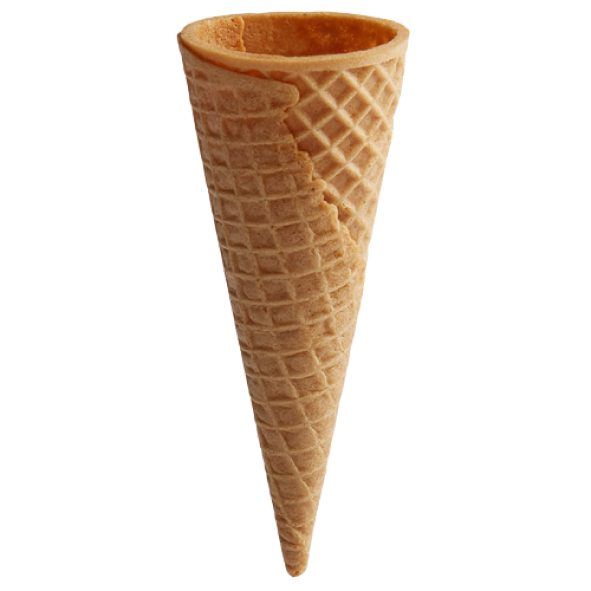
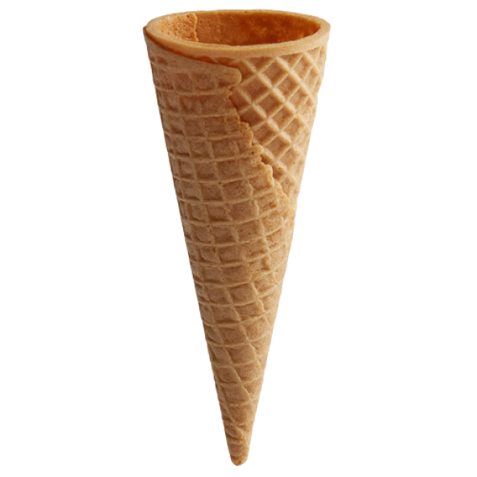

This webzine is an experiment in translation. How does ice cream melt, taste and act on the internet? What does it look like when a treat that is so well known exists across time and space? Ice cream is a classic dessert enjoyed by people of all ages across the globe. Inspired by vintage ice cream reviews cataloged at the Prelinger Library, as well as by ice cream containers and vintage advertisements, the question this webzine aims to explore: how can ice cream be held in the container of a webzine? How can it exist within the container of the internet? Using an interdisciplinary approach, our goal is to create a dynamic and engaging webzine that not only celebrates ice cream, but also illuminates the complex web of social, cultural, and historical factors that have shaped and continue to shape our relation to this iconic and global treat.